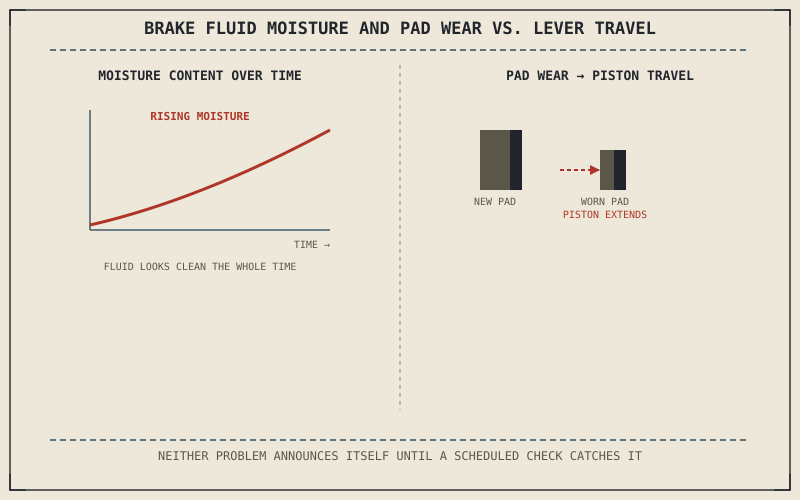

Chapter 7.3 already explained why brake fluid needs scheduled replacement: it's hygroscopic, absorbing moisture from the air over time, which lowers its boiling point and risks vapor bubbles under sustained hard braking. This chapter takes that established fact and builds the actual maintenance routine around it, alongside the other components — pads, discs — that wear through ordinary use rather than chemical aging.
Chapter 10.5 closed by naming brake maintenance and fluid service as this chapter's subject, the system that actually slows the motorcycle down. This chapter covers it.
Brake Fluid: A Scheduled Replacement, Not a Level Check Alone
Chapter 7.3 established that absorbed moisture lowers brake fluid's boiling point over time, independent of how the brakes actually feel day to day — fluid can look clean and the lever can feel firm while the fluid's moisture content has already crept toward a level that risks boiling under sustained hard use. This is why brake fluid has a genuine scheduled replacement interval based on time, not just a level check topped up when low; a full fluid flush, not simply adding fluid to the reservoir, is what actually removes the accumulated moisture Chapter 7.3 identified as the real concern.
Pad Wear and the Piston Travel It Changes
Chapter 7.3 described caliper pistons pushing pads against the disc to generate the clamping force Chapter 7.2 quantified, and as pads wear thinner, those pistons have to extend further to make the same contact, which is why lever travel gradually increases as pads wear even though the underlying hydraulic system hasn't changed. Checking remaining pad thickness against the minimum specified by the manufacturer, rather than waiting for a warning sound or a noticeably long lever, catches wear while there's still a safety margin — by the time pad wear becomes obvious through feel or sound, the pad or the disc underneath it may already be closer to failure than a routine check would have allowed.
Brake fluid can look clean while its actual boiling point has already dropped from absorbed moisture, and pads can still feel fine while already close to their wear limit — both are reasons a scheduled inspection beats waiting for an obvious symptom.

A brake fluid reservoir shown with moisture content rising over time despite the fluid appearing visually clean, alongside a brake pad shown wearing thinner with the caliper piston extending further to compensate, and lever travel increasing correspondingly.
Disc Thickness and Its Own Wear Limit
Chapter 7.2 established that disc size sets stopping torque through leverage, and a disc also has a minimum thickness specification, since a disc worn below that thickness has reduced heat capacity — the same heat-shedding role Chapter 7.2 identified as a genuine advantage of larger discs — and reduced structural strength under the clamping force Chapter 7.3 described. Measuring disc thickness periodically, not just visually inspecting for scoring, catches this gradual wear before it compromises the disc's ability to manage the heat and force the rest of this book's braking chapters assumed it could handle.
A Common Misconception, Cleared Up Early
It's a common assumption that brake maintenance mainly means replacing pads when they wear thin, treating fluid as a secondary or optional concern by comparison. Chapter 7.3 already established that degraded fluid can produce a spongy, less effective lever feel regardless of pad condition, and a fluid-related failure under sustained hard braking can be considerably more sudden and severe than the gradual, generally predictable process of pad wear. Brake maintenance genuinely means both, on their own separate schedules, not primarily pads with fluid as an afterthought.
Where This Leads
Mechanical maintenance has covered fluids, drivetrain, tyres, and brakes. The motorcycle's electrical system — battery, charging, wiring — runs on a different set of principles this book hasn't yet applied to maintenance directly. Chapter 10.7 turns to battery and electrical system care next.
Key Concepts to Remember
- Brake fluid needs a full scheduled flush, not just a level top-up, since absorbed moisture lowers its boiling point regardless of how the fluid looks or the lever feels.
- Increasing lever travel as pads wear reflects the caliper piston extending further to compensate, making a direct pad-thickness check more reliable than waiting for lever feel to change.
- Disc thickness should be measured periodically, since a worn disc loses both heat capacity and structural strength before visible scoring necessarily appears.
Cross-References
| ← Ch. 7.3 | Established brake fluid's moisture absorption and boiling-point risk; this chapter builds the scheduled flush routine directly around that established mechanism. |
| ← Ch. 7.2 | Established disc size setting stopping torque and heat capacity through leverage; this chapter shows disc wear directly reducing both. |
| → Ch. 10.7 | Covers battery and electrical system care, the next maintenance area running on different underlying principles. |